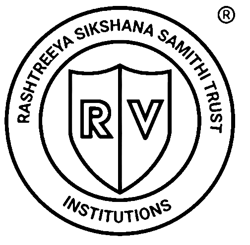
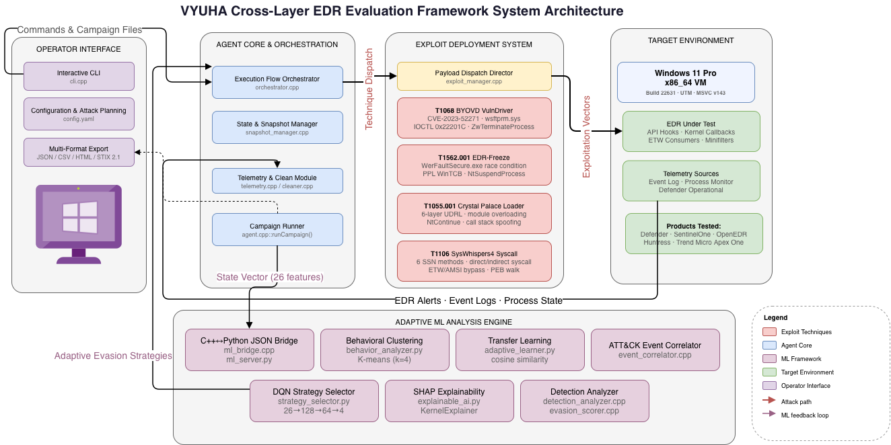
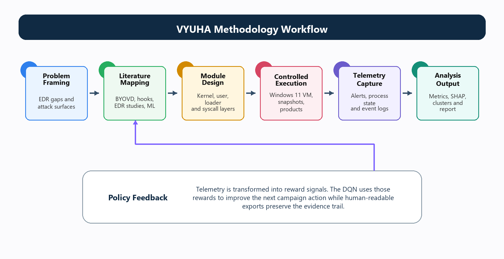
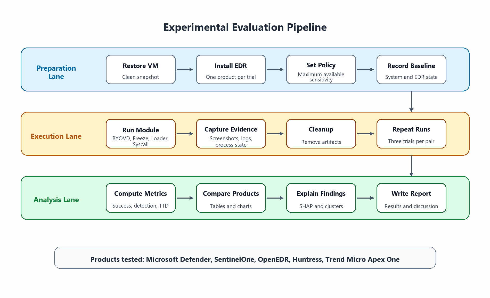

BYOVD Engine
Tests resilience against vulnerable signed-driver abuse in a controlled kernel-level scenario.

VYUHA DocsMajor project documentation
Cross-layer EDR kill-chain evasion evaluation with adaptive reinforcement learning orchestration.
A controlled academic framework for validating endpoint detection and response behavior across kernel, user-mode, memory, telemetry, and policy-decision layers.
Overview
VYUHA treats endpoint security testing as an adaptive experiment. Each run records the attempted action, observed defensive response, detection status, block behavior, time-to-detection, and cleanup state so the final evidence is measurable instead of anecdotal.
Technique modules
Tests resilience against vulnerable signed-driver abuse in a controlled kernel-level scenario.
Measures process-health assumptions and response behavior when protected processes are suspended.
Evaluates in-memory execution visibility through layered reflective-loading behavior.
Assesses user-mode hook coverage through direct syscall invocation paths.
Architecture



Evaluation
The report evaluates Microsoft Defender, SentinelOne, OpenEDR, Huntress, and Trend Micro Apex One. The DQN selector learns product-specific policies, while explainability analysis shows which defensive properties influenced technique selection.
Read the complete evaluationDownloads